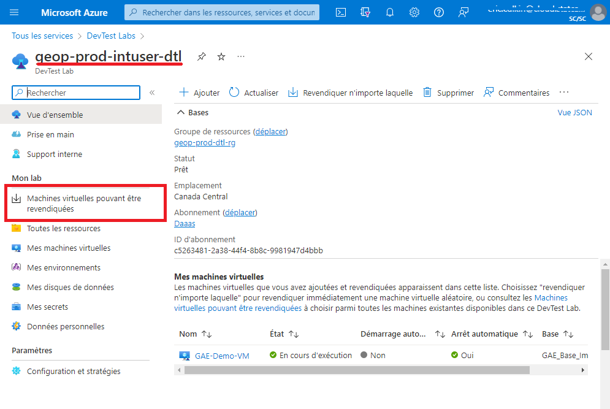
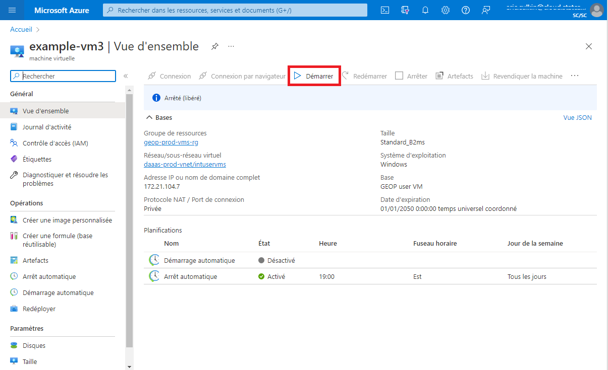
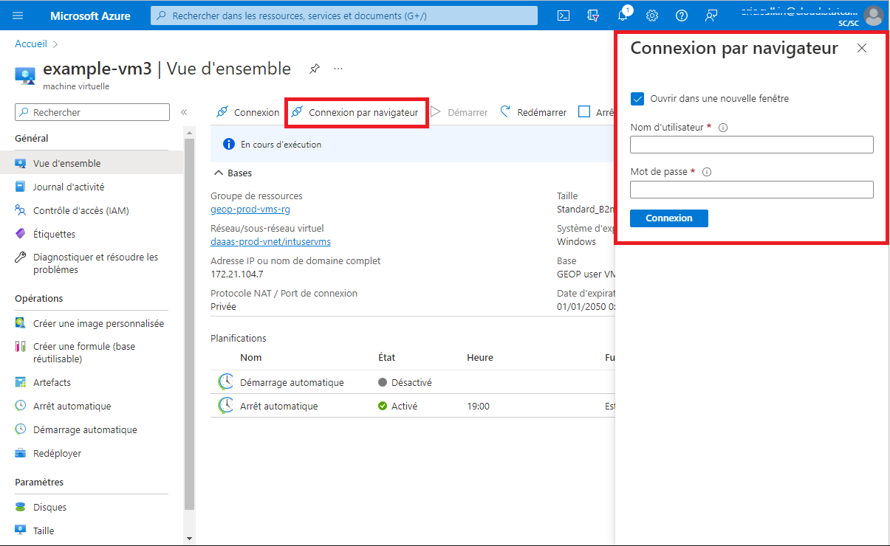
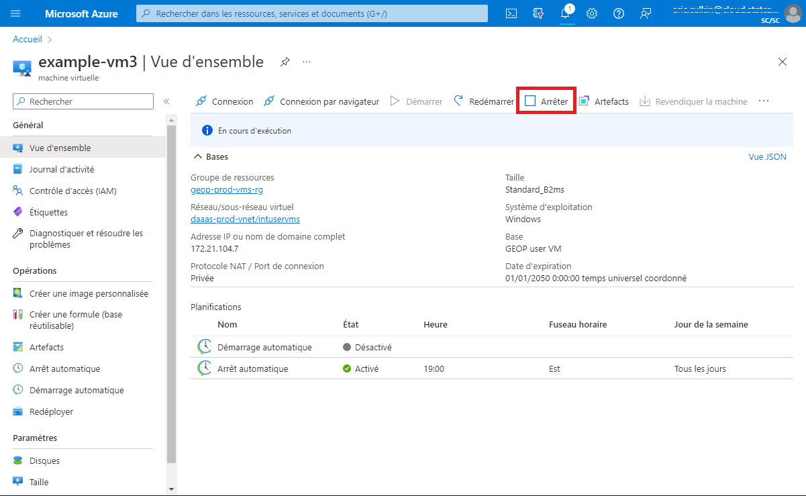
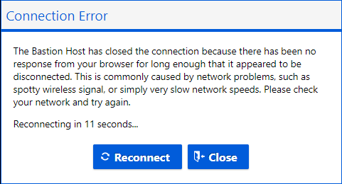
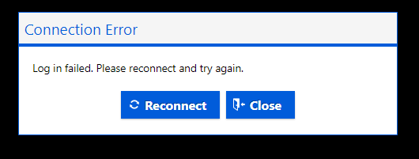
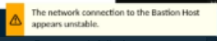

Utilisation de votre MV en nuage
À propos de votre MV EAG
Une machine virtuelle EAG sera créée pour vous.
Comment puis-je demander des modifications à ma machine virtuelle?
Si votre MV ne satisfait pas à vos exigences, veuillez communiquer avec l’équipe de soutien par l’intermédiaire du tableau d’assistance de l’EAG JIRA (interne).
Les MV EAG ordinaires comprennent les éléments suivants:
| Matériel : | Logiciel : | |
|---|---|---|
| - Quatre unités centrales virtuelles, mémoire vive de 14 Go - Carte graphique AMD Radeon Instinct MI25 - En savoir davantage – Microsoft |
- ArcGIS Pro (BYO-license) - QGIS - Conda(miniforge) |
|
| +ressources désignées lors de l’intégration du projet. |
Machines virtuelles sur l’ETAA et l’EAC
Selon votre projet, vous pouvez créer une machine virtuelle ordinaire dans l’EAC ou créer un espace de travail dans l’ETAA.
Ces MV libre-service ne sont PAS optimisées pour le rendu géospatial.
Première utilisation
Recherche et réclamation d’une Machine virtuelle
-
Accédez à l’URL du portail Azure à partir d’OZ:
https://portal.azure.com/#home. -
Sélectionnez Autre services et filtrez/recherchez "DevTest Labs".

-
Remplacez le filtre Abonnements par : TOUS ou Daaas.
Sélectionnez geop-prod-intuser-dtl.

-
Dans le panneau de menu de gauche, sélectionnez : Machines virtuelles pouvant être revendiquées.

-
Localisez et sélectionnez votre Machine virtuelle. Votre machine virtuelle sera nommée : projectAccroymn-statcanID. ex: Gae-Namenick

-
Dans la page vue d’ensemble de la Machine virtuelle, sélectionnez Revendiquer la machine.

-
Réclamer prendra quelques minutes. Attendez le message Revendiqué avec succès avant de continuer.

-
Sélectionnez Connexion au navigateur. Un nouveau panneau s’ouvrira à droite.
Entrez votre nom d’utilisateur : StatCanID (ex: namenick).
Entrez le mot de passe temporaire: (fourni via l’e-mail d’intégration).
Sélectionnez Connecter.
-
Changez votre mot de passe pour quelque chose de mémorable. (Paramètres système > Options de connexion > Mot de passe )
Utilisation future
Démarrage d’une Machine virtuelle
-
Accédez à l’URL du portail Azure à partir d’OZ:
https://portal.azure.com/#home
-
Sélectionnez DevTest Labs dans Ressources - récentes.
-
Sélectionnez votre machine virtuelle.
-
À partir de la page Vue d’ensemble de la Machine virtuelle, cliquez sur le bouton Démarrer.

-
Il faut quelques minutes pour que votre Machine virtuelle démarre. Surveillez sa progression de démarrage en sélectionnant l’icône Notifications en haut à droite de la fenêtre.
Se connecter à une Machine virtuelle
-
Démarrez votre Machine virtuelle et attendez la notification (cela peut prendre quelques minutes).
-
À partir de la page Vue d’ensemble de votre Machine virtuelle, cliquez sur le bouton de connexion du navigateur. 
-
Assurez-vous que la case à cocher Ouvrir dans une nouvelle fenêtre est sélectionné, entrez le nom d’utilisateur et mot de passe, et cliquez sur le bouton Connecter. Votre Machine virtuelle doit s’ouvrir dans un nouvel onglet du navigateur.
 Arrêter une Machine virtuelle
Arrêter une Machine virtuelle
Les ordinateurs virtuels entraînent des coûts que lorsqu’ils sont en cours d’exécution.
Vous devez arrêter votre ordinateur virtuel lorsqu’il n’est pas utilisé pour éviter des frais inutiles.
Votre machine virtuelle a un temps d’arrêt automatique de 7pm PST.
- À partir de la page Vue d’ensemble de votre machine virtuelle, cliquez sur le bouton Arrêter. 
Redimensionner votre machine virtuelle
Les utilisateurs ont la possibilité de redimensionner leurs machines virtuelles pour économiser des ressources (coûts) ou améliorer les performances.
1.À partir de la page d'aperçu des machines virtuelles, sélectionnez Taille dans la barre de menu de gauche

2.Sélectionnez la taille souhaitée, puis cliquez sur Sélectionner en bas de la fenêtre

Si vous avez besoin de spécifications différentes de celles répertoriées pour les machines virtuelles, soumettez un ticket de support technique à DAS-GAE
Erreurs courantes et correctifs
| Erreur | Solution | |
|---|---|---|
|  | Votre MV est en train de démarrer; attendez une minute et réessayez. | |
|  | Vous avez probablement saisi de manière incorrecte le nom d’utilisateur ou le mot de passe de la MV; réessayez. | |
|  | Vous subissez une certaine latence de réseau; ce problème se résout généralement de lui-même. Si ce n’est pas le cas, essayez de redémarrer votre MV. |
Conseils
conseils
 • Consultez le Centre de connaissances pour obtenir de l’aide sur la configuration des bibliothèques et progiciels Python.
• Consultez le Centre de connaissances pour obtenir de l’aide sur la configuration des bibliothèques et progiciels Python.
L’utilisation de raccourcis clavier lors de la connexion à une MV peut ne pas entraîner l’action attendue (p. ex. Ctrl + z fermera la fenêtre principale de votre navigateur, et non la fenêtre du navigateur de la MV).
• L’heure d’arrêt automatique des MV est 19 h (HNC) cela peut être réglé sur demande :FAQ
Vous avez plusieurs écrans? Vous ne pouvez pas modifier les paramètres d’affichage des MV, mais il existe un moyen de pratiquement utiliser plusieurs écrans. Utilisez le bouton Niveau inférieur dans la fenêtre de votre navigateur, puis faites-le glisser pour redimensionner la fenêtre sur plusieurs écrans afin d’obtenir un effet multi-écran. Il vous faudra peut-être régler certaines configurations dans les paramètres d’affichage de votre ZO-ordinateur portatif. 
En savoir davantage sur les MV de l’EAC
En savoir davantage sur les espaces de travail de l’ETAA